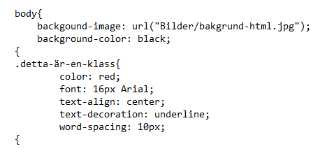
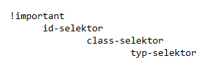
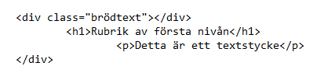
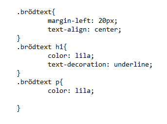

Hur fungerar CSS?
CSS kan med fördel användas tillsammans med HTML.
Det finns 3 olika sätt att använda CSSen. Det finns extern, intern och inline.
Detta är extern CSS som måste länkas med en separat CSS-fil.
Det bli mycket enklare att hålla reda på din HTML kod och din CSS-kod.
- Color = Ger färg till texten.
- Font = Ger typsnitt till texten.
- Text-align = Center ger centrerad text, men kan även sätta den till right och får texten att utgå från höger.
- Text-decoation = Ger en understruken text, man kan också få en genomstruken text.
- Word-spacing = Hur mycket mellanrum man vill ha mellan orden i meningen.
Detta är intern CSS som måste skriva innanför <style>-taggar i <head>-taggen

Detta är hur det kan se ut vid inline CSS. Man använder <span>-taggen för att göra en stilsättning av enstaka ord mitt i en mening.
När är det bra att använda vad?
Detta är i vilken prioritetsordning HTML läser in koden. !important har ALLTID prioritet.
Men koden läses in inline - intern - extern i den ordningen.
Det bäst är att ha stillsättningen i en extern fil. Det blir mycket lättare att hitta i den.
 Olika element kan ärva från föräldraelementet.
I detta exemplet så är all text inom classen "brödtext" centrerad och har en marginal från vänster med 20 pixlar.
H1an ärver från brödtexten, men även fått en egen text-dekoration som är understruken.
P har ärvt från "brödtext" men inte från H1 och är endast lila.
Hade jag sagt en färg i tex <body> så hade allt ärvts från bodyn.